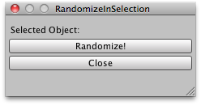

EditorWindow.ShowUtility
public void ShowUtility();
Description 描述
Show the EditorWindow as a floating utility window.
When the utility window loses focus it remains on top of the new active window. This means
the EditorWindow.ShowUtility window is never hidden by the Unity editor. It is, however, not
dockable to the editor.
Utility windows will always be in front of normal Unity windows. It will be hidden when
the user switches from Unity to another application.
Note: You do not need to use EditorWindow.GetWindow before using this function to show the window.

Floating window utility that lets you randomize the rotation of the selected objects.
using UnityEditor; using UnityEngine; using System.Collections;
// Simple script that randomizes the rotation of the selected GameObjects. // It also lists which objects are currently selected.
public class RandomizeInSelection : EditorWindow { public float rotationAmount = 0.33f; public string selected = "";
[MenuItem("Example/Randomize Children In Selection")] static void RandomizeWindow() { RandomizeInSelection window = ScriptableObject.CreateInstance(typeof(RandomizeInSelection)) as RandomizeInSelection; window.ShowUtility(); }
void RandomizeSelected() { foreach (var transform in Selection.transforms) { Quaternion rotation = Random.rotation; transform.localRotation = Quaternion.Slerp(transform.localRotation, rotation, rotationAmount); } }
void OnGUI() { foreach (var t in Selection.transforms) { selected += t.name + " "; }
EditorGUILayout.LabelField("Selected Object:", selected); selected = "";
if (GUILayout.Button("Randomize!")) RandomizeSelected();
if (GUILayout.Button("Close")) Close(); }
void OnInspectorUpdate() { Repaint(); } }